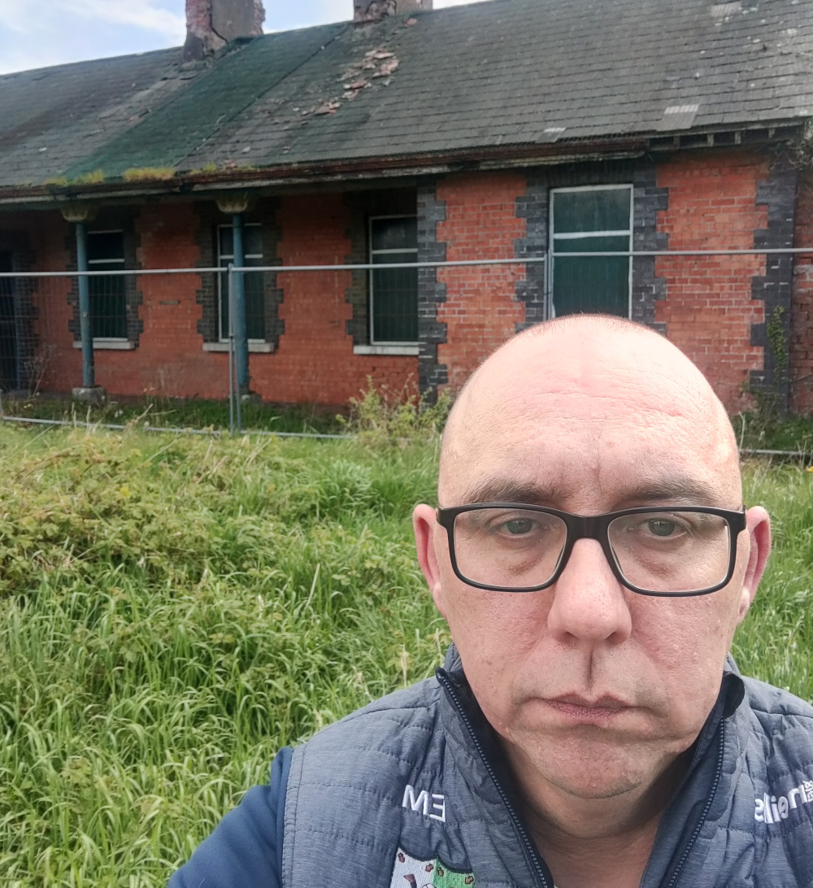

Over the past few weeks, Irish Rail has installed new signage around Attymon station and added new biodiversity enhancements such an "insect hotel".
This week, Irish Rail have applied for planning permission for works to secure the roof. The station has no working office now, but what remains is a beautiful derelict red brick building from the 1890's. When Attymon opened, it was a junction connecting the Galway Dublin line to the Attymon Loughrea branch line. This branch line closed in 1975. Today the red brick waiting room is boarded up and fenced off.
The station has a ticket machine and, though unmanned, is used daily. There are four services from Attymon to Galway each day, and five to and from Dublin.
Local Green Party candidate,
Eoin
Madden is a frequent user of the service:
"Thanks to the fare reductions in
April 2022, a trip from Attymon to
Galway now costs under a fiver and
parking there is free. Its a great
service; I use the train from Attymon
and Athenry frequently for my work in
Galway. Its more convenient and less
stressful than driving into town and
finding parking. Of course the emissions
are significantly lower too. We can’t
expect every car journey to switch to
public transport, but the government
needs to have in place the
infrastructure and prices so that the
occasional journey by public transport
becomes possible.".
“From a heritage point of view, I welcome the news that Irish Rail are seeking to secure the roof of the 19th century waiting room, it would be shame to see the building crumble away beyond repair. Maybe in the future it can be converted to a community space or a house”.
Last year, Irish Rail, added some biodiversity enhancements, such a wildflower bed and an insect hotel. And insect hotel is a small structure that allows solitary bees and other native insects nooks and crannies to nest in. Often in our quest to make places look neat and tidy we forget to leave a space for nature, such as a leaf pile or some rotting wood; an insect hotel is a way to do this but still make sure a garden doesn’t look neglected.